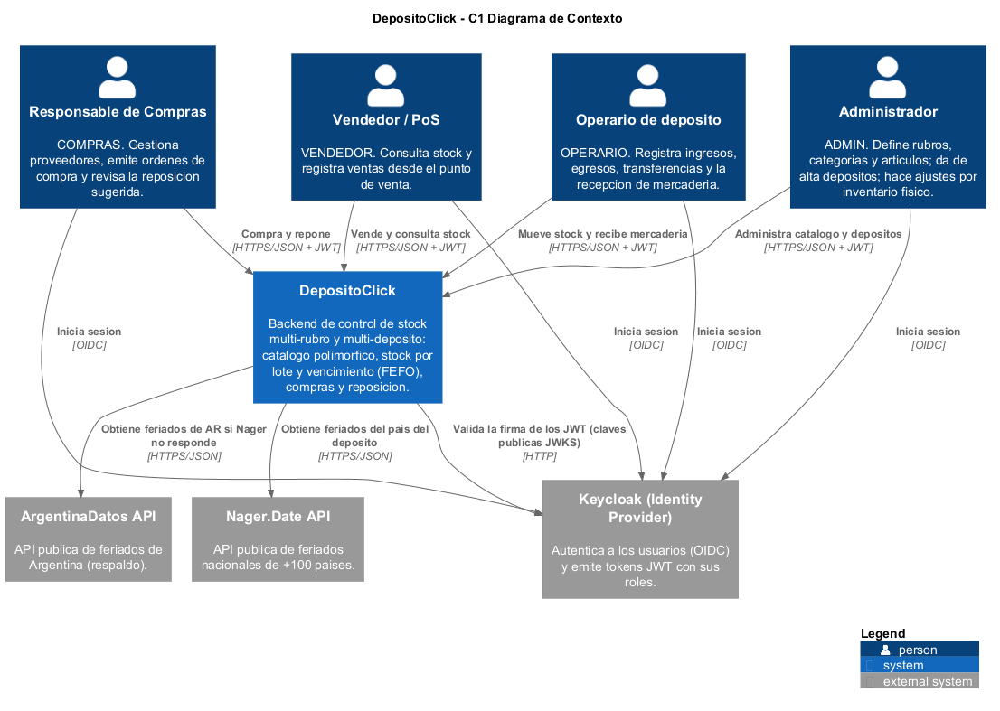
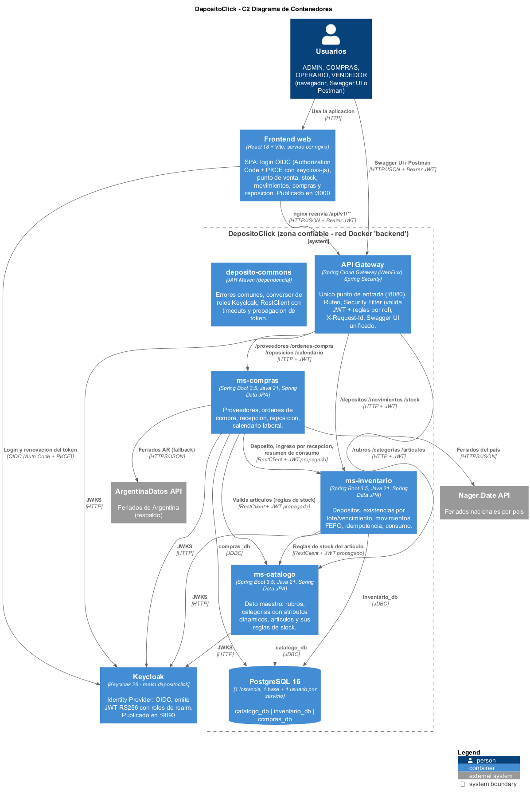
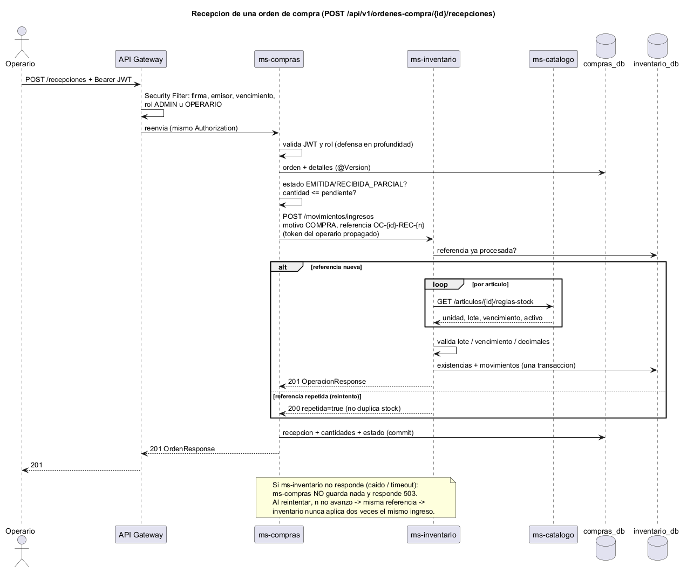
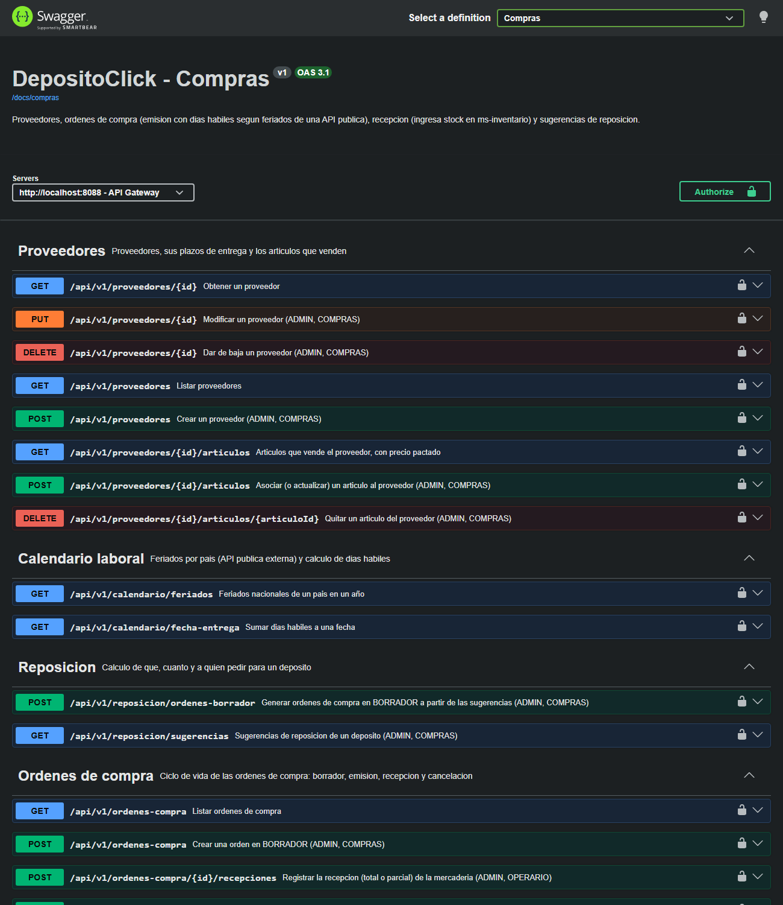
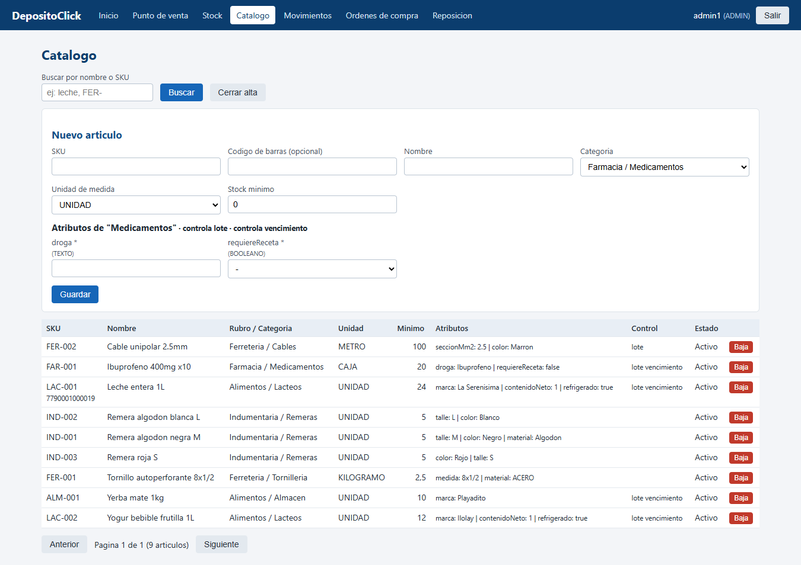
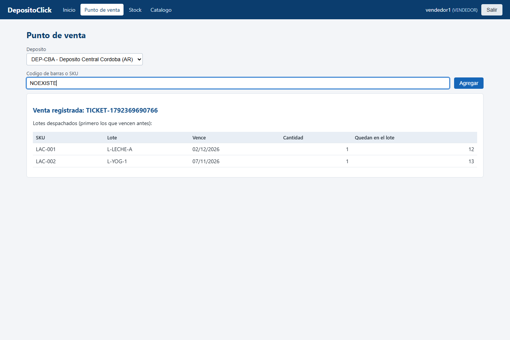

Integrante: 400677 — Martino Lautaro Emanuel
Java 21 · Spring Boot 3.5 · Spring Cloud Gateway · Spring Data JPA · Spring Security · Keycloak · PostgreSQL · React · Docker Compose
El enunciado pide “un software capaz de controlar el stock de un depósito, polimórfico en el sentido de poder utilizarse en cualquier rubro de negocio y seguir siendo funcional, accesible mediante OAuth2, e integrando de forma inteligente alguna API pública externa”. El nombre del proyecto es DepósitoClick — PoS (Point of Sale), así que además del depósito se contempla el punto de venta como consumidor del stock.
Leído con atención, el enunciado deja tres desafíos de fondo:
Un negocio (de cualquier rubro) tiene uno o más depósitos, posiblemente en distintos países. En los depósitos se guarda mercadería que entra por compras a proveedores (o por stock inicial, devoluciones) y sale por ventas en el punto de venta, consumo interno, roturas, vencimientos o transferencias a otro depósito. Periódicamente hay que decidir qué reponer, a qué proveedor y en qué cantidad, sabiendo que cada proveedor tarda cierta cantidad de días hábiles en entregar.
| Actor | Rol en Keycloak | Qué hace |
|---|---|---|
| Administrador | ADMIN | Define rubros, categorías (con sus atributos y si controlan lote/vencimiento) y artículos; da de alta depósitos; realiza ajustes por inventario físico. Puede todo. |
| Responsable de compras | COMPRAS | Gestiona proveedores y sus precios, crea y emite órdenes de compra, consulta y aplica la reposición sugerida. |
| Operario de depósito | OPERARIO | Registra ingresos, egresos por cualquier motivo, transferencias y la recepción física de las órdenes de compra. |
| Vendedor / caja (PoS) | VENDEDOR | Consulta el catálogo (incluso por código de barras) y el stock, y registra egresos por venta (solo venta). |
| Keycloak | sistema externo | Identity Provider: autentica usuarios y emite los JWT. |
| APIs de feriados | sistema externo | Nager.Date (principal, +100 países) y ArgentinaDatos (respaldo para AR). |
| # | Regla | Dónde vive |
|---|---|---|
| R1 | Los atributos de un artículo deben respetar la definición de su categoría: obligatorios presentes, sin atributos desconocidos, valores del tipo correcto (TEXTO, NUMERO, ENTERO, FECHA, BOOLEANO, OPCION). | catálogo |
| R2 | SKU único e inmutable; código de barras GTIN (8/12/13/14) con dígito verificador válido y único. | catálogo |
| R3 | La unidad de medida de un artículo no se puede cambiar (el stock existente quedaría expresado en otra unidad). Las unidades discretas (UNIDAD, PAR, CAJA) no admiten cantidades fraccionarias. | catálogo / inventario / compras |
| R4 | Una categoría que controla vencimiento debe controlar lote. No se puede agregar un atributo obligatorio a una categoría que ya tiene artículos. | catálogo |
| R5 | Si la categoría controla lote/vencimiento, todo ingreso debe informarlos; si no, no se aceptan. Un mismo lote tiene siempre el mismo vencimiento (en todos los depósitos). | inventario |
| R6 | No se ingresa mercadería vencida o que vence hoy. Un artículo dado de baja no puede recibir stock (pero sí liquidarse lo que quedó). | inventario |
| R7 | El stock nunca queda negativo. Los egresos se despachan por FEFO. Lo vencido no se despacha, salvo un egreso con motivo VENCIMIENTO (que solo toma lo vencido). | inventario |
| R8 | Cada operación tiene una referencia única: si se repite, no se vuelve a aplicar (idempotencia). Un ingreso por COMPRA exige referencia. | inventario |
| R9 | El VENDEDOR solo registra egresos por VENTA. Los ajustes son solo de ADMIN y requieren justificación. | inventario / gateway |
| R10 | No se da de baja un depósito con stock, ni un proveedor con órdenes pendientes de recepción. | inventario / compras |
| R11 | CUIT de proveedor con dígito verificador válido (módulo 11). | compras |
| R12 | Una orden solo puede incluir artículos activos que el proveedor vende; los precios por defecto son los pactados. | compras |
| R13 | Fecha estimada de entrega = emisión + lead time del proveedor en días hábiles del país del depósito destino (sin fines de semana ni feriados nacionales). Una fecha de entrega solicitada debe ser hábil y alcanzable. | compras + API externa |
| R14 | Ciclo de vida de la orden: BORRADOR → EMITIDA → RECIBIDA_PARCIAL → RECIBIDA; se cancela solo si no se recibió nada. No se recibe más de lo pendiente. | compras |
| R15 | Reposición: punto de pedido = consumo diario × días corridos hasta la entrega + stock mínimo; se considera lo ya pedido (órdenes en camino) para no pedir dos veces. | compras |
Mantener el dato maestro del catálogo; llevar el saldo de stock por lote y su historia; garantizar atomicidad, concurrencia (bloqueo optimista) e idempotencia de los movimientos; gestionar el ciclo de compras; calcular plazos y reposición; autenticar y autorizar cada operación según el rol; exponer todo como API REST documentada.
DepósitoClick es el backend de control de stock de un negocio de cualquier rubro que opera uno o más depósitos, eventualmente en distintos países. El catálogo se organiza en rubros y categorías; cada categoría define qué atributos describen a sus artículos (por ejemplo talle y color para remeras, droga y receta para medicamentos, sección para cables) y si su stock se controla por lote y por vencimiento. Cada artículo tiene un SKU inmutable, un código de barras opcional (validado), una unidad de medida (unidad, par, caja, kilogramo, litro, metro, metro cuadrado — las tres primeras solo admiten cantidades enteras) y un stock mínimo. Los artículos se dan de baja de forma lógica.
El inventario lleva, por depósito, artículo y lote, la cantidad existente y su vencimiento. Toda variación se hace mediante operaciones (ingreso, egreso, transferencia, ajuste) identificadas por una referencia única, que generan movimientos inmutables con el usuario que los realizó. Los egresos eligen los lotes por FEFO y jamás despachan mercadería vencida (la baja por vencimiento es un egreso especial). El punto de venta consulta por código de barras y registra ventas; esas ventas alimentan el consumo promedio de cada artículo.
Compras administra los proveedores (CUIT, plazo de entrega en días hábiles) y qué artículos vende cada uno a qué precio (uno puede marcarse como proveedor preferido). Las órdenes de compra se crean en borrador, se emiten —momento en que se calcula la fecha de entrega con el calendario laboral del país del depósito, armado con feriados obtenidos de una API pública—, se reciben en una o varias recepciones que ingresan el stock al inventario (con lote y vencimiento) y terminan recibidas o canceladas. Finalmente, el módulo de reposición combina stock disponible, consumo, stock mínimo, órdenes en camino y plazos reales para sugerir qué pedir y a quién, y puede generar las órdenes en borrador por proveedor.
Los usuarios se autentican en Keycloak y operan con uno de cuatro roles: ADMIN, COMPRAS, OPERARIO y VENDEDOR.
Ampliaciones respecto del enunciado (todas justificadas por el problema): multi-depósito y multi-país; lotes, vencimientos y FEFO; idempotencia de operaciones; módulo de compras con recepciones parciales; reposición sugerida; punto de venta con búsqueda por código de barras; auditoría por usuario.


| Contenedor | Tecnología | Responsabilidad | Expuesto |
|---|---|---|---|
| Frontend web | React 18 + Vite, nginx | Interfaz para los 4 roles; login OIDC con keycloak-js; nginx reenvía /api al gateway | Sí (3000) |
| API Gateway | Spring Cloud Gateway 2025.0 (WebFlux) + Spring Security reactivo | Único punto de entrada, ruteo, Security Filter, traza X-Request-Id, errores de infraestructura, Swagger UI unificado | Sí (8080) |
| ms-catalogo | Spring Boot 3.5 (MVC), JPA | Dato maestro de artículos y sus reglas | No |
| ms-inventario | Spring Boot 3.5 (MVC), JPA | Depósitos, existencias, movimientos | No |
| ms-compras | Spring Boot 3.5 (MVC), JPA, RestClient | Proveedores, órdenes, recepción, reposición, calendario laboral | No |
| PostgreSQL 16 | 1 instancia | Una base y un usuario por microservicio | No |
| Keycloak 26 | realm depositoclick | Identity Provider (OIDC, JWT RS256) | Sí (9090) |
| Nager.Date / ArgentinaDatos | APIs públicas (Internet) | Feriados | Fuera de la infraestructura |
El criterio fue separar por responsabilidad funcional y por dueño del dato (cada pieza de información tiene un único servicio que la puede modificar), no por entidad ni por CRUD:
| Servicio | Es dueño de | Pregunta que responde | Frecuencia de cambio |
|---|---|---|---|
| ms-catalogo | rubros, categorías, atributos, artículos | ¿Qué es este artículo y cómo se controla su stock? | Baja (configuración) |
| ms-inventario | depósitos, existencias, movimientos, operaciones | ¿Cuánto hay, dónde, de qué lote, y qué pasó? | Muy alta (cada venta) |
| ms-compras | proveedores, precios, órdenes, recepciones, calendario | ¿Qué, cuánto, a quién y cuándo comprar? | Media |
Las tres responsabilidades tienen ritmos y usuarios distintos: el catálogo lo configura un administrador cada tanto; el inventario recibe tráfico constante del punto de venta y es el que conviene escalar; compras es una función de negocio separada (otro usuario, otras reglas, integración externa). Además el grafo de dependencias es acíclico: catálogo no depende de nadie; inventario depende de catálogo; compras depende de catálogo e inventario.
Consecuencias: hay llamadas remotas en procesos que en un monolito serían locales, así que hubo que diseñar timeouts, manejo de caídas, idempotencia y copias locales de lectura (secciones 6 y 10).
Toda la comunicación interna es síncrona, HTTP/JSON con RestClient (el cliente recomendado por la cátedra
para Spring MVC), siempre con timeouts (2 s de conexión, 5 s de lectura) y propagando el JWT del usuario
que originó la operación. Cada servicio define sus propios DTOs para lo que consume (por ejemplo
ReglasArticuloRemoto, con la unidad como String y no como el enum del catálogo), de modo que
un cambio interno en otro servicio no lo rompe. El cliente distingue tres casos: 404 = “no existe” (respuesta válida),
caído/timeout/5xx = “no pude preguntar” (ServicioNoDisponibleException, 503) y respuesta inesperada
(ErrorRemotoException, 502). Los 4xx de otro servicio se traducen leyendo su ErrorResponse, con lo
que el usuario ve el motivo original (ej.: “ms-inventario: El artículo LAC-002 se controla por lote: debe informar el lote”).
| Inicia | ms-inventario, al recibir un ingreso/egreso/transferencia/ajuste. |
|---|---|
| Necesita | Las reglas del artículo: si existe, si está activo, unidad (¿decimales?), si controla lote y vencimiento, stock mínimo. GET /api/v1/articulos/{id}/reglas-stock (contrato pensado para esto). |
| Conserva | Inventario decide cómo se mueve el stock (FEFO, negativos, vencidos, idempotencia). El catálogo solo informa reglas: nunca sabe cuánto stock hay. |
| Si no responde | Modo degradado: inventario guarda una copia local (snapshot) de las reglas de cada artículo cada vez que el catálogo responde. Si el catálogo está caído, se opera con esa copia solo si tiene menos de 24 h (configurable) y la respuesta incluye una advertencia. Sin copia reciente → 503 (preferimos no mover stock con reglas que no podemos verificar). Probado en el despliegue real (sección 14). |

| Inicia | ms-compras (POST /ordenes-compra/{id}/recepciones, rol OPERARIO o ADMIN). |
|---|---|
| Necesita | Que inventario registre el ingreso (motivo COMPRA) con lote y vencimiento; inventario a su vez consulta al catálogo. |
| Conserva | Compras: estado de la orden y cantidades pendientes (no se recibe más de lo pedido). Inventario: validación de lote/vencimiento/unidad y el stock. Compras no duplica reglas de lote: si faltan, el 422 de inventario se propaga tal cual. |
| Si no responde | Compras no guarda nada y responde 503 (“La recepción NO se registró; puede reintentarla sin riesgo de duplicar stock”). La referencia es determinística (OC-{id}-REC-{n}, con n = recepciones ya registradas + 1): si inventario sí aplicó el ingreso pero la respuesta se perdió, el reintento usa la misma referencia y inventario devuelve el resultado original con repetida=true en lugar de sumar stock otra vez. Dos recepciones simultáneas de la misma orden chocan en el @Version de la orden (409). |
Alternativas evaluadas para la consistencia entre servicios: 2PC/XA (descartado: complejo y acopla disponibilidad),
Saga con mensajería (más robusto ante caídas largas, pero requiere un broker y escapa al alcance de la materia), y la elegida:
llamada síncrona + idempotencia por referencia + orden de commit (primero el servicio dueño del stock, después el registro
local). La consecuencia es que, si compras se cayera justo después de que inventario aplicó el ingreso y nadie reintenta, quedaría
stock ingresado sin recepción registrada; la operación GET /movimientos/operaciones/OC-x-REC-n permite detectarlo y el
reintento lo corrige.
Compras verifica con inventario que el depósito destino exista y esté activo (y obtiene su país, que define el calendario), y con catálogo que cada artículo exista, esté activo y respete la unidad. Además verifica con sus propios datos que el proveedor venda ese artículo. Si cualquiera de los dos servicios no responde → 503 y no se crea nada.
Es el proceso que más información cruza: inventario aporta stock disponible y consumo promedio diario
(GET /stock/resumen-reposicion, ventas + consumo interno de los últimos N días); catálogo aporta stock mínimo, unidad y
si el artículo sigue activo (una sola llamada en lote, GET /articulos/reglas-stock?ids=…, para evitar N llamadas);
compras aporta proveedor preferido (o el más barato), plazo, precio y lo ya pedido en órdenes en camino; la API de feriados permite
pasar el plazo de días hábiles a días corridos (el consumo ocurre todos los días, el proveedor solo entrega en días hábiles).
Cada sugerencia incluye una explicación en texto (“…el proveedor tarda 2 días hábiles = 4 días corridos (incluye feriados: …)”).
Inventario no decide cuánto comprar y compras no calcula stock: cada uno responde por lo suyo.
reglas-stock, resumen-reposicion).Los proveedores pactan plazos en días hábiles. Para saber cuándo llega un pedido (y por lo tanto cuánto stock hay que tener para cubrir la espera) hay que saber qué días son feriados en el país del depósito. Ese dato no se puede guardar como configuración: cambia todos los años (Carnaval y Semana Santa son móviles), en Argentina hay feriados trasladables y “puentes turísticos” que se fijan por decreto, y cada país tiene los suyos (el sistema es multi-país: los datos de ejemplo tienen un depósito en Córdoba y otro en Montevideo). Mantenerlo a mano sería frágil y propenso a errores.
GET /calendario/feriados y GET /calendario/fecha-entrega para que el usuario vea el cálculo.GET https://date.nager.at/api/v3/PublicHolidays/{año}/{país}. Gratuita, sin API key, +100 países. Se usan date, localName y global: solo se consideran los feriados nacionales (global=true), porque uno provincial no frena una entrega en todo el país.GET https://api.argentinadatos.com/v1/feriados/{año} (incluye puentes turísticos).RestClient “externo” de deposito-commons: timeouts de 3 s/5 s y sin propagar nuestro token (a un tercero nunca se le manda la credencial del usuario).compras_db (tablas feriados y calendarios_descargados) válida por 7 días; se guarda en una transacción propia (REQUIRES_NEW) para no perderla si la operación que la pidió falla.| Paso | Situación | Comportamiento |
|---|---|---|
| 1 | Hay caché de menos de 7 días | Se usa sin llamar a Internet. |
| 2 | Nager responde bien | Se usa y se cachea (fuente NAGER_DATE). |
| — | Nager responde 404 (país desconocido) | No es una falla: se calculan solo fines de semana y se avisa “la API no tiene información del país”. |
| 3 | Nager caído, timeout, 5xx, JSON inválido, lista vacía o fechas de otro año | La respuesta se descarta (una respuesta 200 no alcanza: se valida el contenido) y, si el país es AR, se usa ArgentinaDatos. |
| 4 | Ninguna API disponible pero hay caché vieja | Se usa la caché vencida y se avisa la fecha de descarga. |
| 5 | Nada disponible | Se descuentan solo sábados y domingos; la orden queda con calendarioConfiable=false y la respuesta incluye la advertencia “la fecha podría ser anterior a la real”. |
Decisión: que la falla de la API externa no bloquee la operación de compras (degradar en lugar de fallar), pero
dejando registrado de qué fuente salió el cálculo (fuenteCalendario) y si es confiable. La alternativa de devolver 503
se descartó porque la API es un tercero sobre el que no tenemos control y su indisponibilidad no debería frenar la operatoria.
depositoclick, importado automáticamente al levantar (keycloak/depositoclick-realm.json) con 4 roles de realm y 4 usuarios de prueba.depositoclick-client público (no hay secreto que proteger en un front/Swagger) con Authorization Code + PKCE (para un front real) y Direct Access Grants (password, para Swagger/Postman/pruebas, como en el Apunte 21).iss) y vencimiento.realm_access.roles → ROLE_X con KeycloakRolesConverter (deposito-commons), que además toma preferred_username como nombre del usuario para auditoría.| Operación | ADMIN | COMPRAS | OPERARIO | VENDEDOR |
|---|---|---|---|---|
| Consultar catálogo, stock, depósitos, movimientos, calendario | ✔ | ✔ | ✔ | ✔ |
| ABM de rubros, categorías, artículos, depósitos | ✔ | |||
| Egreso por VENTA | ✔ | ✔ | ✔ | |
| Egreso por otro motivo, ingresos, transferencias | ✔ | ✔ | ||
| Ajuste por inventario físico | ✔ | |||
| Consultar proveedores y órdenes | ✔ | ✔ | ✔ | |
| ABM proveedores, crear/emitir/cancelar órdenes, reposición | ✔ | ✔ | ||
| Recepción de mercadería | ✔ | ✔ |
backend. Los clientes no conocen la topología interna.denyAll() para cualquier ruta no expuesta (por ejemplo /actuator/env).localhost:9090 pero los servicios ven a Keycloak como keycloak:9090. Se configuró KC_HOSTNAME=http://localhost:9090 (el iss siempre es el mismo) y en los servicios issuer-uri (para validar el emisor) + jwk-set-uri interno (para bajar las claves). Así se valida el emisor sin depender de la URL pública dentro de la red.deposito-commonsArtefacto Maven independiente (ar.edu.utn.frc.bda:deposito-commons:1.0.0), instalado en el .m2 con
mvn install y referenciado como dependencia en el pom.xml de los tres microservicios y del gateway.
Sus dependencias son provided: no impone versiones ni arrastra librerías (el gateway, que no tiene Spring MVC, lo usa sin problemas).
En Docker, la etapa de build hace exactamente lo mismo: mvn install del commons y luego package del servicio.
| Se compartió | Por qué es verdaderamente común |
|---|---|
Jerarquía de excepciones (RecursoNoEncontrado 404, ReglaNegocio 422, Conflicto 409, ServicioNoDisponible 503, ErrorRemoto 502) + GlobalExceptionHandler + ErrorResponse | Todos los servicios deben responder errores con el mismo formato y semántica; además, al ser un contrato común, un servicio puede leer el error de otro y propagar su mensaje. |
KeycloakRolesConverter y Roles | La política de identidad es transversal: si cambia el claim de roles se cambia en un solo lugar (lo usan también el gateway reactivo). |
RestClientSoporte, PropagarTokenInterceptor, LogLlamadasInterceptor | Garantiza que ninguna llamada salga sin timeouts ni log, y fija la regla “token solo a servicios internos”. |
UsuarioActual, PaginaResponse | Utilidades sin lógica de negocio. |
Deliberadamente NO se compartió: entidades, repositorios, servicios ni DTOs de dominio. Si inventario usara la clase
Articulo del catálogo, cada cambio del catálogo obligaría a recompilar y redesplegar inventario (acoplamiento de
despliegue) y se borraría la frontera de “dueño del dato”. Cada consumidor define su propia vista (ReglasArticuloRemoto).
Tampoco la configuración de seguridad por rutas: cada servicio conoce sus propias reglas. Consecuencia: algo de duplicación en DTOs
remotos y en OpenApiConfig, aceptada a cambio de independencia.
catalogo_db, inventario_db, compras_db; script db/init.sql con REVOKE ALL … FROM PUBLIC). Un servicio no puede ni leer las tablas de otro. Es un punto medio entre una base compartida (simple pero acopla esquemas) y un motor por servicio (más aislamiento pero más recursos para un TPI). Si un servicio necesitara escalar su base, se separa sin tocar a los otros.JpaRepository con consultas derivadas, @Query JPQL, proyecciones (consumo por artículo) y un repositorio custom con EntityManager para la búsqueda de movimientos con filtros opcionales (patrón del Apunte 16).ddl-auto=update para que el despliegue sea reproducible sin pasos manuales (en producción se usaría Flyway/Liquibase).@Version en existencias y órdenes (si dos cajas venden la última unidad a la vez, una recibe 409); todas las operaciones de stock son @Transactional (todo o nada).BigDecimal(14,3) para soportar kilos/metros sin errores de punto flotante; precios (14,2).h2 de desarrollo./api/v1, sustantivos en plural, minúsculas y kebab-case (/ordenes-compra, /reglas-stock), camelCase en parámetros, filtros por query string y paginación (pagina, tamanio, máx. 100).Location), PUT reemplazo, DELETE baja (204), PATCH reactivación. Las transiciones de estado se modelan como sub-recursos que se crean: POST …/emision, …/recepciones, …/cancelacion, porque cada una es un hecho del negocio con reglas propias.repetida=true en lugar de 201.@Valid, @NotNull, @Positive, @Digits, @Pattern, @Email, @FutureOrPresent, @Validated para parámetros) y reglas de negocio en la capa de servicio.ErrorResponse): timestamp, status, error, mensaje, path, detalles; el gateway responde sus propios errores (servicio caído, timeout) con el mismo formato.@Operation, @ApiResponses, @Tag, @Schema con ejemplos). Cada servicio publica /v3/api-docs; el gateway los expone en /docs/{servicio} y sirve un Swagger UI unificado con selector de servicio, cuyo “server” es el propio gateway y que permite autenticarse contra Keycloak (OAuth2 password) o pegar un Bearer token.
Se siguió la arquitectura en capas de los Apuntes 15 y 17, con la estructura de paquetes sugerida por la cátedra:
ar.edu.utn.frc.bda.depositoclick.inventario ├── controllers → @RestController: mapean HTTP, @Valid, ResponseEntity con el status correcto (sin lógica) ├── services → @Service @Transactional: reglas de negocio (MovimientoService, StockService, ReglasArticuloService) ├── repositories → JpaRepository, @Query, proyecciones, repositorio custom con EntityManager ├── models → @Entity (Lombok), enums del dominio ├── dtos → request/response de la API (nunca se exponen entidades) ├── clients → RestClient hacia otros servicios / APIs externas + DTOs remotos propios └── config → SecurityConfig, OpenApiConfig, RestClientConfig, DatosIniciales
Inyección por constructor (@RequiredArgsConstructor), beans de configuración con @Value,
CommandLineRunner para datos de ejemplo, y las excepciones de negocio del commons manejadas por el
@RestControllerAdvice global.
eclipse-temurin:21-jre para ejecutar). El contexto es la raíz del proyecto para poder instalar primero deposito-commons en el .m2 del build.frontend (gateway y Keycloak) y backend (todo lo interno). Configuración por variables de entorno (URLs internas por nombre de servicio, credenciales de cada base, issuer/JWKS, URLs de las APIs públicas). Zona horaria de los contenedores en America/Argentina/Cordoba (las fechas de vencimiento y los días hábiles dependen del “hoy”).GATEWAY_PORT, por defecto 8080).El TPI se centra en el backend, pero se agregó una interfaz básica en React 18 + Vite para poder usar la aplicación con los cuatro roles sin herramientas técnicas (Swagger/Postman siguen disponibles). Decisiones:
keycloak-js y Authorization Code + PKCE (onLoad: 'login-required'): el usuario se
loguea en la pantalla de Keycloak y el front nunca ve la contraseña (a diferencia del grant password, que queda solo para pruebas).
El token se renueva automáticamente (updateToken(30)) antes de cada llamada y se envía como Bearer. El cierre de
sesión invalida la sesión en Keycloak./api/ al API Gateway por la red interna (en
desarrollo lo hace el proxy de Vite). El gateway sigue siendo el único punto de entrada a los microservicios y aplica todas las reglas
de seguridad.realm_access.roles): un VENDEDOR solo ve Punto de venta, Stock y
Catálogo. Es solo usabilidad: la autorización real la hacen el gateway y los microservicios.mensaje del ErrorResponse común, así el usuario ve la regla de negocio que
falló (ej.: “Stock insuficiente de LAC-001…”).

| Tipo | Qué cubre | Resultado |
|---|---|---|
Unitarias + integración por servicio (mvn verify, H2 + JWT simulado con spring-security-test, Mockito para servicios remotos y APIs externas) | commons (3): conversión de roles. catálogo (12): validadores GTIN y de atributos, permisos, 400/409/422. inventario (6): FEFO, stock insuficiente, lote/vencimiento/decimales, idempotencia, VENDEDOR solo vende, catálogo caído con y sin copia local, transferencias. compras (14): días hábiles con feriados, cadena de respaldo de APIs, respuesta inesperada, país desconocido, CUIT, ciclo de la orden, inventario caído, fecha en fin de semana, permisos, reposición. gateway (5): 401, 403 sin rol, 403 por ruta, denyAll, 503 con servicio caído. | 40/40 OK |
Punta a punta sobre el despliegue Docker real (scripts/demo.sh: Keycloak real, PostgreSQL, gateway, APIs públicas) | Seguridad, catálogo polimórfico, stock inicial, idempotencia, ventas FEFO, transferencia, ajuste, feriados AR/UY, ciclo de compra completo (parcial + total) y reposición con generación de borradores. | 35/35 pasos OK |
| Frontend en navegador automatizado (Chrome + puppeteer) | Redirección al login de Keycloak y vuelta, menú según rol (VENDEDOR y ADMIN), venta por código de barras y por SKU, artículo inexistente, logout, alta de artículo con atributos dinámicos, reposición, órdenes y movimientos; sin errores de JavaScript. | OK |
| Resiliencia manual (apagando contenedores) | Inventario caído → recepción 503 sin cambios y reintento exitoso al volver; gateway → 503 propio; catálogo caído → venta con copia local + advertencia, y 503 para artículo sin copia. | Comportamiento esperado |
| Decisión | Alternativas consideradas | Por qué | Consecuencias |
|---|---|---|---|
| Polimorfismo por datos (categorías con atributos tipados y política de lote/vencimiento) | Herencia de entidades por rubro; columnas JSON libres | Un rubro nuevo no requiere código; la validación sigue siendo estricta | Los atributos se guardan como texto validado (filtrar por atributo es menos eficiente) |
| 3 microservicios por dueño del dato | Monolito, 2 servicios, 1 por entidad | Responsabilidades y ritmos distintos, dependencias acíclicas | Llamadas remotas: timeouts, degradación, idempotencia |
| Comunicación síncrona REST (RestClient) | Mensajería (RabbitMQ/Kafka), WebClient | Lo visto en la materia; procesos que necesitan respuesta inmediata | Acoplamiento temporal, mitigado con timeouts, snapshot y reintentos seguros |
| Idempotencia por referencia en inventario | Confiar en que no haya reintentos; 2PC | Permite reintentar ante timeouts sin duplicar stock | Tabla adicional y referencias determinísticas |
| Copia local de reglas del artículo (≤ 24 h) | Fallar siempre; cachear para siempre | El PoS sigue vendiendo si el catálogo se cae un rato | Ventana en la que un cambio del catálogo no se vería |
| FEFO automático y bloqueo de vencidos | FIFO, lote siempre manual | Reduce pérdidas por vencimiento; el cajero no elige lote | Lógica de selección más compleja |
| Feriados por país vía API + caché + respaldo + degradación | Tabla manual; API de tipo de cambio; fallar si la API no responde | Dato cambiante, multi-país, imprescindible para plazos | Dependencia de terceros, mitigada y transparente (fuente/confiable) |
| Keycloak + JWT validado en gateway y en cada servicio | Validar solo en el gateway; sesiones; API keys | Defensa en profundidad, estándar OIDC | Configuración de issuer/JWKS dentro de Docker |
| Propagación del token del usuario | Client Credentials | Auditoría y permisos del usuario real en toda la cadena | Procesos atados a la vigencia del token |
| Una base por servicio en un mismo PostgreSQL | Base compartida; un motor por servicio | Aislamiento real con bajo costo | Un único motor como punto de falla |
| Commons solo con lo transversal | Compartir entidades/DTOs | Evitar acoplamiento de despliegue | Algo de duplicación de DTOs remotos |
| Swagger UI unificado en el gateway | Un Swagger por servicio expuesto | No exponer la topología; un solo lugar para probar | El gateway rutea también la documentación |
ddl-auto=update; migraciones versionadas con Flyway.start-dev (base embebida); en producción con su propia base y realm versionado.| Servicio | Endpoints (todos bajo http://localhost:8080) |
|---|---|
| ms-catalogo |
GET/POST /api/v1/rubros, GET/PUT/DELETE /api/v1/rubros/{id}GET/POST /api/v1/categorias, GET/DELETE /api/v1/categorias/{id}, POST /api/v1/categorias/{id}/atributosGET/POST /api/v1/articulos, GET/PUT/DELETE /api/v1/articulos/{id}, PATCH /api/v1/articulos/{id}/reactivacionGET /api/v1/articulos/sku/{sku}, GET /api/v1/articulos/codigo-barras/{codigo}GET /api/v1/articulos/{id}/reglas-stock, GET /api/v1/articulos/reglas-stock?ids= |
| ms-inventario |
GET/POST /api/v1/depositos, GET/PUT/DELETE /api/v1/depositos/{id}POST /api/v1/movimientos/ingresos | egresos | transferencias | ajustesGET /api/v1/movimientos (filtros + paginado), GET /api/v1/movimientos/operaciones/{referencia}GET /api/v1/stock, /stock/articulos/{id}, /stock/bajo-minimo, /stock/vencimientos, /stock/resumen-reposicion |
| ms-compras |
GET/POST /api/v1/proveedores, GET/PUT/DELETE /api/v1/proveedores/{id}, GET/POST /api/v1/proveedores/{id}/articulos, DELETE …/articulos/{articuloId}GET/POST /api/v1/ordenes-compra, GET /api/v1/ordenes-compra/{id}, POST …/{id}/emision | recepciones | cancelacionGET /api/v1/reposicion/sugerencias, POST /api/v1/reposicion/ordenes-borradorGET /api/v1/calendario/feriados, GET /api/v1/calendario/fecha-entrega |
| Infraestructura | Aplicación web: http://localhost:3000 · Swagger UI: /swagger-ui.html · Keycloak: http://localhost:9090 (admin/admin) · Token: POST /realms/depositoclick/protocol/openid-connect/token |
Usuarios: admin1/admin123 (ADMIN), compras1/compras123 (COMPRAS), operario1/operario123 (OPERARIO), vendedor1/vendedor123 (VENDEDOR).
Datos de ejemplo: 4 rubros, 6 categorías, 8 artículos, 2 depósitos (DEP-CBA en Argentina, DEP-MVD en Uruguay) y 5 proveedores.
Puesta en marcha: docker compose up -d --build y luego bash scripts/demo.sh (ver README.md).